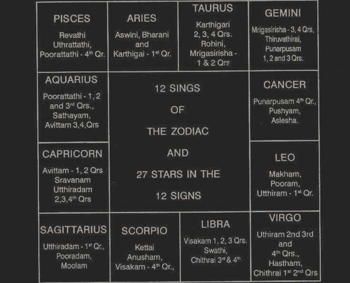

(Each star is divided into 4 equal divisions. Each part is called either pada or quarter = 3° - 20’. Half of a star = 6° - 40’. When a constellation commences in one sign and extends in the next succeeding one, it is mentioned as ‘a’ and ‘b’. The numeral number given for each star is the number of the star in the 27 constellation starting from Aswini)

1. Aswini : 0° Aries to 13°–20’ Aries (Mesha). The first constellation. The sign Aries is ruled by Mars and the constellation is governed by Kethu. Hence, this zone indicates the following matters in general.
Part of the body: Head, Cerebral hemispheres.
Diseases: Injury in the head, congestion in the brains, thrombosis, cerebral anaemia, faintings epilepsy, violence, spasms, severe headache on any one side, neuralgia, coma, trance, cerebral haemorrhages, paralytic stroke, insomnia, malaria, meningitis, smallpox.
Mental qualities: Avarious, extravagant, worried about landed property, brother’s ailment, dispute with brother, partition, black magic, can pray Lord Ganesh or Subramanya or Narasimha or Anjaneya. (Will be fond of Ornaments, lovely in appearance, liked by all, clever and intelligent).
Profession: Service in factory, police, military, medical, surgery, criminal courts, jail, railways, machinery, iron, steel, copper (Commandants, Physicians, Attendants, horses, horse - riders, horse - dealers, horse - groom, handsome persons as traders).
Does not contribute to child birth unless Kethu happens to be a benefic to the INDIVIDUAL. May induce abortion, surgical aid for fertility but mostly remaining barren. When strong benefits form favourable aspects, the evil results will be warded off.
When one runs Mars Dasa Kethu Bhukthi or Kethu dasa, Mars Bhukthi, the matters signified by Mars and Kethu to that native will materialize when either of them or either of the luminaries transit in the Zone. Sun will transit in this area between 14th April and 27th April every year. Moon will transit on Aswini star once in 27 days.
2. BHARANI : 13°–20’ Aries to 26°–40’ Aries (Mesha) the second star. Sign ruled by Mars, Star governed by Venus.
Part of the body : Head, Cerebral hemisphere, organs within the head, eyes.
Diseases : Injury in the head, mostly in the forehead and just around the eyes, cold venereal distemper, syphilis affecting face and vision, catarrh in the head, moist humours, mucus, reins afflicted, weakness due to gratifying one’s tastes and pleasurable emotions in dissipating habits.
Mental qualities : Chain smoker (Mars Venus.fiery sign) (Tobacco cultivator) – mind, always fond of pleasure, enterprises, aspiring, amorous, avaricious, (cruel men, those that feed on blood and flesh, slayers, low - born persons, cudgellers, huskgrain and wanting in character. Will carry out his purpose to the end, will be truthful, free from malady, clever and happy).
Profession : Makes money through pleasure, sports, music or musical instruments, art advertisement, show display, exhibition, silver utensils, eversilver, silk, mobile, automobile, fertilizer, industry, railway, factory, wrestler, cinema theatre, studio, mansion for marriage, animal husbandry, veterinary doctor, slaughter house, tea or coffee estates, caterers, hotels, restaurants, criminal lawyer, judge, leather manufacturer, skins and hides, building contractors, engineer, those who assess and pass orders, revenue department, surgeon, maternity, venereal expert, optician, agriculturist.
Whenever one runs Mars dasa Venus Bhukthi or Venus dasa Mars Bhukthi, then the matters signified by these two planets will materializes, when either of these planets transit - in this zone or in Mrigasira first half or Chithrai second half or Venus star Mars sub or Mars star Venus sub : Also when the luminaries Sun and Moon transit in these areas, one can enjoy those results. Sun will transit between 27th April and 10th May every year, and Moon transits in Bharani constellation once in 27 days.
3. A. KARTHIGAI 1ST QUARTER : 26°–40' Aries to 30° Aries Sign owned by Mars and the star by Sun.
Part of the body : Head, eyes, brain, vision.
Diseases : Sharp fever, malaria, filaria, plague, smallpox, wounds, cerebral meningitis, brain fever, injury, cuts, accident, explosions, carbuncle, fire accident.
Mental qualities : Normally robust health, good strength, great enthusiasm, push - up, go ahead spirit, militant temperament, leading nature, commanding appearance, competitive mind, argumentative ability etc. (will eat much, will be drawn to other peoples’ wives, will be ebullient in appearance and famous).
Profession : Acquisition of lands, buildings or possession of patrimony, bold punter, dauntless, escalator, military, police, industry, medical, surgical, navy (Moon in this position or a planet in this star and Moon Sub) Defence department, travels, resignation, retirement, manufacturing chemicals, bombs, crackers, explosives, match boxes, iron and steel utensils, war material (Saturn in this area makes one listless and rapid. He will never amount to anything. But Mars in this area promises that the person will not hesitate to fight at the drop of his hat, especially, when Mars is in between 28°–26′40″ and 29°6′–40″, i.e. Mars Sing, Sun Star and Mars sub). (Brahmins and particularly those performing daily Agnihotra, reciters of sacred hymns, white flowers, grammarians, barbers, miners, priests, astrologers, potters and those who know the sacrificial rules).
If one runs Sun Dasa Mars Bhukthi or Mars Dasa Sun Bhukthi, what results these two planets indicate to that person, will be enjoyed when either of them transit in Karthigai 1st quarter. Sun will be there between 10th May and 13th May every year. It is most likely that this sub period which will run only for 4 months and 6 days may be in the other months. In such cases Sun will transit on the day of enjoying the result in Mars star Sun sub or Sun’s star Mars Sub. This is applicable to similar circumstances. If one expects a promotion during Sun Dasa Mars Bhukthi or Mars Dasa Sun Bhukthi, though the period runs for 126 days, one can pitch up the exact date as mentioned above.
3. B. KARTHIGAI 2, 3 AND 4TH QUARTER : 0° to 10° Taurus (Rishaba). Venus is the lord of the sign and Sun is the Lord of the star.
Part of the body : Face, neck, larynx, tonsils, lower jaw, occipital region.
Diseases : Pimples, cuts, reddish eye, eyesore, throat troubles, tumours in the knees, quinsy, swelling above neck polypus of the nose.
Mental qualities : Always fond of company, sociability, hospitality, pleasure, comfort, luxury, generous, courteous affectionate, cheerful and impressionable, creative mind, fruitful action, best fitted for business, smooth profession, speculative tendency, popular and prosperous.
Profession : Benefit through Government, Victory over enemies, acquires costly jewels and dress, contacts with foreigners, realization of even bad debts, pleasant functions, music, dance, drama, opera, poet, artist, drawing master, draftsman, sculpture, silk, photography, international trade, installation of parks, decoration, industry, medical department, engineer, tax collector, wool dealer, export of hair, assessment, venereal expert.
If a person expects the date on which he can enjoy the results of Sun Dasa Venus Bhukthi or Venus Dasa Sun Bhukthi, one has to select the time when the significators transit in that part of the Zodiac, as below.
a. The Lord of the sign Venus and the zone star - ruled by Sun i.e. Karthigai 2,3,4 padas.
b. The lord of the sign Sun and the zone - star - Poorva - palguni (Leo 13° - 20' to 26° - 40') governed by Venus or
c. Venus star, Sun sub or
d. Sun star, Venus sub.
Important events indicated by these two planets cannot happen on other dates. These will be explained in detail in the book “Udu - Dasa”.
4. ROHINI : 10° Taurus to 23° - 20' Sign ruled by Venus star governed by Moon.
Part of the body : Face, mouth, tongue, tonsils, palate, neck, cerebellum, atlas, cervical vertebrate.
Diseases : Sore - throat, cold, Cough, pain in the legs and apoplexy, irregular menses, sweating.
Mental qualities : Pleasant manners, good nature, enjoys nature, taste in music, art, drama, literature, public function, maternal affection, sympathetic, enjoys life in the company of other sex. (Will be truthful, pure, sweet - tongued, with a settled mind and lovely appearance).
Profession : Caters to the need of the public, hotels, restaurants, lodging - houses, bakeries, boarding houses with comforts and conveniences, bar attached, dealers in houses, lands, fruits, automobile, petrol, oils, milk, dairy farm, ice cream, glass, plastic, scents, perfumeries, soap, sandalwood, oil, paints, water, colour, dyes, liquids, acids, marriage broker, dress and pearls dealer, navy, shipping, clearing agent, judge, politician, tannery, yarn merchant, sugar, sugarcane, sugarcoated tablets, etc. (King, Wealthy person, observers of vows, merchandises, cartmen, cows, bulls, aquatic animals, agriculturists, yogis, mountains and men in authority).
5. a. MRIGASIRA First Half : 23° - 20' in Taurus to 30° Taurus ruled by Venus. Star governed by Mars.
Part of the body : Face, chin, cheeks, larynx, palate, carotid, arteries, jugular veins, inflamed tonsils.
Diseases : Pimples, cuts and injuries in those parts, pain in the throat, adenoids, diphtheria, weak loins and king’s evil, nose - bleed, goitre, constipation, venereal distemper polypus.
Profession : Estate owners, land, building, instrumental music, exhibition, display, eversilver, platinum, tailor, dressmaker, mobile structurals, fertilizer, automobile engineering, income tax and sales tax department, skins and hides, tobacco, snuff, confectionery, marriage mandapam owners, veterinary doctors, animal husbandry, lethal chamber, cartmen, rickshaw pullers, taxi drivers, fruit sellers like apple, banana, etc., whereas Rohini shows oranges, grapes and juicy ones, gains through business, textiles, cinema industry, sound engineer, photography, diamonds, rubies, corals, jewellery, vaseline, snow, face powder, sandal powder, tooth paste, brush etc.
5. b. MRIGASSIRA Second Half : 0° to 6° - 40' Gemini sign owned by Mercury and star governed by Mars.
Parts of the body : Throat, vocal cord, arms, shoulders, ears, thymus gland, upper ribs.
Diseases : Corrupted blood, itches, wounds, and fracture of arms, collarbone, fractured femur, sciatica, surfeit, fever, pains in the shoulders near collarbone, arms, disorders in secret parts, inflammation of pericardium.
Mental qualities : Gives mental energy, enthusiasms, dexterity, quick - witted, sharp, fluent, alert, quick, magnetic, impulsive, excitable, vitriolic in their wrath, tongues more poisonous than rattlesnake, acme of selfishness. (Will be fickle, sharp - witted, timid, eloquent, industrious, wealthy and indulging in sexual pleasure).
Profession : Dealing in machineries, tools, instruments, electrical goods, surgical instruments, telephones, telegraph cables, wires, engineers, surgeons, soldiers, mathematicians, ambassadors, astronomers, building contractors, highways, bridge or damsite constructors, textile engineers, tape - record, gramaphone, radio dealers, press, publication, computers, calculators, salesman, representatives, agents, brokers, jobbers, thieves, etc. (Aquatic products, fragrant things, flowers, fruits, garments, gems, birds, beast, forests, drinkers of Soma juice, letter - bearers, lovers and musicians).
6. ARUDHRA : 6° - 40' in Gemini to 20°. Lord of the sign Mercury. Lord of the star Ragu.
Part of the body : Throat, arms, shoulders.
Diseases : Septic throat, mumps, asthma, eosinophilia, drycough, diphtheria, ear trouble, pus in the ear.
Mental qualities : Active mind, initiative perception, ingenious and critical, unsuccessful in literary pursuits, or a scholar depending on Rahu in the individual’s horoscope, good character reader, resourceful mind. (Slayers, adulterers, chasers, thieves, liars, cruelminded people, men versed in the art pertaining to goblins, catchers, rogues, sowers of discord, charmers, sorcerers, and husk - grain. Will be perfidious, haughty, ungrateful, mischievous and sinful).
Profession : Salesman, bookseller, shopkeeper, Post & Telegraphs Department, Communication, transport, atomic energy, aerial, radio, advertising, publicity, writer, author, research department, explorer, dealing in drugs, beverages, canned goods, handwriting expert, finger print expert, public appointments, finance broker. Any how this zone of 13° - 20' is barren. (Planets signifying birth of children, in this zone get weakened and mostly become barren). This area is good for statistics, physics, dynamics, gravitation.
7. a. PUNARVASU 1,2,3 PADAS : Gemini 20° to 30° sign ruled by Mercury. Star by Jupiter.
Part of the body : Ear, throat, shoulder blades.
Diseases : Pleurisy, bronchitis, pneumonia, reins disorder, pericardium inflammed, swelling and pain in the ear, goitre due to iodine deficiency, infiltration in the upper lobe the lungs, pulmonary apoplexy.
Mental qualities : Broad outlook, sharp intellect, good memory, worldly wisdom, correct intuition, clear in sight, proper judgment, practical adaptability, mental balance, desire to learn more and more. (Pure, truthful, highborn, charitably disposed, handsome, intelligent, renowned and rich men, servants, artisans, merchants and valuable grain. Will be self - controlled, happy, amiable, dull, afflicted with disease, thirsty and easily contented).
Profession : Success in journalism, editing, publishing correcting, inspecting, story - writing, advertising, publicity, religion, law, literature, poetry, insurance agency, finance broker, accountants, auditors, civil judge, civil engineer, mayor, counsellor, school master, preceptor, interpreter, secretary, registrar, messenger, Tamil Pandit, astrologer, mathematician, clerk, postman, clothes, woolen merchant, provision, dealer, planets which signify pregnancy in one’s chart gains beneficial strength when they are in this zone.
7. b. PUNARVASU 4th Quarter : In the sign cancer between 0° and 03° - 20'. Lord of the sign is Moon. Lord of the Star Jupiter (Brahaspathi).
Part of the body : Lungs, respiratory system, chest, stomach, oesophagus, diaphragm, pancreas, mammae, lacteals, upper lobes of liver, thoracic.
Diseases : Dropsy, beriberi, stomach upset, irregular appetite, corrupt blood, tuberculosis, pneumonia, bronchitis, liver complaint, jaundice, gourmandize, dyspepsia.
Mental qualities : Fertile imagination, honest, true, sincere, reliable, forgiving temperament, appreciates beauty, correct judgement and effective argument, given good vitality, resourcefulness and fertility, just and benevolent, compassionate, sympathetic, born rich, prince, politician.
Profession : Banker, physician, religious head, temples, economics, statistics, advocate, judge, professor, principal, merchant, sailor, traveller, manager of public conveyance, dealers in fluids, salesman, nurse, midwife, water supplier, female officials.
8. PUSHYAM : Between 3° - 20' and 16° - 40' in Cancer. Sign ruled by Moon and star governed by Saturn.
Part of the Body : Lungs, stomach and ribs.
Diseases : Tuberculosis, ulcerations in the respiratory system, gastric ulcer, gallstones, nausea, belching, obstruction, bruises in the breast, scurvy, cancer, phthisis, jaundice, cough, hiccough, eczema, pyorrhoea, dyspepsia.
Mental qualities : Economical, prudent, frugal, conservative, sober, contemplative, careful, attentive, self - reliant, has a systematic and methodical action, patiently works with perseverance, attains, position of trust (Minister, King, fisherman and the like), persons engaged in big and small sacrifices, honest folk, (forests, wheat, sugarcane, rice and barley). Will be composed in mind, liked by all, learned, wealthy and inclined to be virtuous.
Profession : Deals in mine products, kerosene, petrol, petroleum products, coal, lands, produce, wells, excavations, canals, trenches, deals in agricultural lands, holds position of trust, plumber, sexton, jailer, gravedigger, engineer digging wells, tanks, etc. and constructing bridges, dams, tunnels, those who work at, night and underground, dealers in oils, working in submarine.
9. ASHLESHA (9th Star) 16° - 40' to 30° Cancer, Sign ruled by Moon and Star by Mercury.
Part of the body : Lungs, stomach, oesophagus, diaphragm, pancreas, liver.
Diseases : Vitamin ‘B’ deficiency, cold stomach, windiness, windpressing the diaphragm making it difficult to breathe, distillation of the rheum, pain in knees and legs. Drunkenness, jaundice, nervous, indigestion.
Mental quality : Quick wit, ingenious, reasonable, versatile, fluent and copious in speech, good writer, acquires other languages easily, can imitate others, mimicry, has the desire to learn art, music and literature, fond of travels. (Will be in - sincere, inclined to eat everything, sinful, ungrateful and deceitful.)
Profession : Sale man, agent, representative, business, Commerce, international trade, clerk correspondent, author, writer, manufacturer, water supply engineer, textile engineer, dealer in yarn, paper, pen, ink, traveling agent, guide, hostess, astrologer, mathematician, water diviner, midwife, nurse. (Pulps, roots, fruits, reptile, poison, worms, counterfeits, robbers, huskgrain and all classes of physicians.)
11. MAKAM : (10th Star) 0° to 13° - 20' in Leo - Simha, Sign ruled by Sun, Star governed by Kethu.
Part of the body : Heart, back, spinal cord, spleen, dorsal region of spine, aorta.
Diseases : Heart affected by sudden shock, grief or poison, pains in the back, cholera, humourous, gravel in kidneys, palpitation, regurgitation, faintings, signal meningitis.
Mental qualities : Outspoken, assertive, combative, defensive, forceful, audacious, sensual, impulsive, proud short - tempered, hasty, fiery temper, enthusiastic and energetic, eminently fitted to occupy a position of trust both in public and private concern, good sportsman, contact with people in very high position, good appointment, undertake lofty plan, (Will be wealthy and have many servants, will enjoy life, worship the Gods and the Manes and be very industrious).
Profession : Contracts big factories, chemical drug manufacturer, criminal lawyers, defence department, surgeons, medical department, Government service or security in service, manufacturer of imitation jewellery, cheap ornaments, electroplating, manufacturers of nickel and chromium plated surgical instruments, weapons (depending on the planet in this position or the sub in which it is or where the meridian falls select that department in Government service. Just like Sun’s rays includes “VIBGYOR’, so also government service includes from menial to minister, peon to president. (People rich in money and corn, men who are devoted to their elders and manes, granaries mountaineers, heroes, women haters, carnivorous beings).
12. POORVAPALGUNI : 11th Star. 13° - 20' to 26° - 40' in Leo sign ruled by Sun, star governed by Venus.
Part of the body: Heart, Spinal Cord.
Diseases : Due to disappointment in love, heart affected, Loss of children affecting hearts, all due to shocks and irreparable loss, Curvature of the spine, anaemia, hydremia, pain in legs, swelling of ankle, blood pressure, aneurism, swelling of heart, valves affected.
Mental qualities: Competence in music, art, Kavi - poet, Generous, warmhearted, affectionate, fond of pleasure, luxury and comfort, temptation to speculate, true, honest, cautious, able to fulfil his desires, self - centred, desire to atleast attend dramas or dance, taste in drawing, sculpture and paintings, acquires fancy and costly jewels, dress, photography as hobby (artists, actors, young damsels, musicians, amiable persons, merchandise, cotton, salt, honey, oil mandy boys. Will speak sweetly, will be liberal in gifts, bright in appearance, fond of wandering, and loyal to his sovereign).
Profession: Government service, Transport, Radio, Music, renovation of ancient paintings, preservation of monuments, museums, sports, mobile, automobile, disinfectant for crops, cinema theatre, studio, film section, photography, animal husbandry, slaughter house, lethal chamber, veterinary surgeon, leather, skin, hides, hotels, canteens, revenue department, house - building, maternity surgeon, venereal expert, educationalist, Vice - Chancellor, service in women’s colleges or jails, optician, glass dealers, cigarette manufacturers.
11. a. UTHRAPALGUNI – 1st Pada: 12th Star. 26° –40' to 30° in Leo. Sign ruled by Sun and the Star also governed by Sun.
Part of the body : Spinal Cord.
Diseases : Pains in the back and the head, spotted fever, plague, hyperaemia, faintings, blood pressure, becomes mad temporarily due to clotting of blood in the capillaries in the brain, palpitation, backache.
Mental qualities: May or may not be violent. It depends on the planet in this area. Very violent if mars is in between 28° - 26′40″, and 29° - 13′ - 20″ in Leo. Ambitious, authoritative, boastful and domineering, energetic and enthusiastic, gaudy and generous, haughty and hopeful, illustrious, joyful, kingly, loyal, magnanimous, optimistic, proud, royal, stately and zealous (Charitable and learned persons, mild, modest, pure, heretical, highly wealthy men, those intend on their duties and kings, fine corn. Will be loved by all, earn money by his own learning, will be voluptuous and happy).
Profession: Any service under government. Medical, defence, shipping, navy, industry, commerce, stock exchange - share business, maternity home, heart specialist.
12.b. UTHRAPALGUNI - 2nd 3rd and 4th Padas: In Virgo 0° to 10° - 12th Star. Sign ruled by Mercury and star governed by Sun.
Part of the Body: Intestines, bowels, liver.
Diseases: Tumours in the bowels, obstructions, stomach disorder, sorethroat and swelling in neck.
Mental qualities: Good reasoning, intelligent, tactful, business minded, studious, industrious, good in mathematics or engineering, astronomy, astrology, book keeping, clever and critical, dexterous and diplomatic, eloquent and educated (hygiene and sanitary engineering), ingenious and intellectual, accounts, business, acumen, advertising.
Profession: Amalgamating a few companies, astronomer, astrologer, communication department, education department, handwriting expert, governor, tourist department, engineering, press, lecturer, correspondent, publication, public relation officer, megaphone, loudspeaker, manufacturer, telephone, mine engineering, State Trading Corporation, contractors, agents, industry, chemical engineering, physician, public health department, hospitals, Registrar of Newspaper, Registrar of birth and death, ambassadors, postal department.
13. HASTHAM: In Virgo 10° to 23° - 20’. 13th Star. Sign ruled by Mercury and Star governed by Moon.
Part of the body: Bowels, intestines, secreting glands, enzymes.
Diseases: Vitamin B deficiency, gas formation, flatulence, loose bowels, pain and disorder of the bowels, obstructions, arms and shoulders weak, short breath, worms mucus, cholera, diarrhoea, typhoid, amoebic, and bacillary dysentery, neuralgia (imagination), fear complex, hysteria.
Mental qualities: Man versed in the Vedas, merchandises, traders and energetic men, Will be industrious, impudent, fond of drinking, merciless and thievish, charioteers, elephant drivers, robbers, elephants, artisans, husked - grain.
Profession: Salesman, commerce, overseas, communication, mail order business, shipping, clearing agent, textile, yarn, engineer, bridges, damsites, canals, tunnels, ink, press, ink manufacturer, advocate, sanitary engineer, export, import, artist, painter, politician, ambassador, embassy, messenger.
14.a. CHITHRAI - First Half: 14th Star. In Virgo 23° - 20’ to 30°. Sign Lord is Mercury. Star lord is Mars.
Part of the body: Belly, Lower part.
Diseases: Ulcers, sharp and acute pains, choleric humours, worms, irritation and itching, legs paining, dry - gripping pain, wounds from insects, reptiles and animals.
Mental qualities: Humorous, dexterous, practical, business like, enthusiastic, bold, courageous, energetic, enterprising, active or quick tempered, sarcastic, argumentative, impatient, resentful, overworking and irritable. (Will wear beautiful) garments and flowers and will have beautiful eyes and limbs.
Profession: Mechanical Engineer, Press, Publication, Building contractor or broker, Supplier to jail, criminal lawyer, tax department, Sales Tax, Income - tax, revenue, finance department, factory, industry, electricity, mine, tunnel, trenches, finger print expert. Police of Law and order and traffic, defence department, military accounts, cost accountant. Persons skilled in the art of ornamenting, painting, jewellery, singing, writing, perfumery, as well as mathematicians, weavers, physicians).
14.b. CHITHRAI 3rd and 4th Padas: In Libra 0° to 6° - 40’. Sign ruled by Venus and the Star by Mars.
Part of the body: Kidney, loins, hernia, Appendicitis, lumbar region of the spine, Vasomotor system.
Diseases: Polyuria, inflammation of ureter connecting kidney and bladder, Bright’s diseases, lumbago, kidney trouble, excess of urine, hemorrhage of the kidneys, renal stones, sunstroke, brainfever, pains in head.
Mental qualities: Ambitious, aspiring, adventurous, amorous, faculties of perception and observation, clear vision, refined tastes, idealistic temperament, intuitive mind, loves, science and refined occupations.
Profession: Lawyer, Surgeon, scientist, Philosopher, religious, endowment board, business, military, defence department, industry, partnership in business, building contractor, litho press, artistic advertisement, decorators, scents, perfumeries, powders, marriage broker, registrar of marriages, sports materials, music, telescope, microscope, radio, television, tape - record dealers, lady doctors, surgeons, tailors, cigarette and snuff merchants, petroleum products, automobile spare parts, dress, jewels.
15. SWATHI: 6° - 40’ to 20° Libra Sign ruled by Venus. Star by Rahu.
Part of the body: Skin, kidneys, ureter, appendicitis, hernia, bladder.
Diseases: Polyuria, urinary trouble, ureters ulcerated, pus formation, Bright’s disease, eczema, skin trouble, leprosy.
Mental qualities: Compassionate, honest, courteous, just, clear, intellect, initiative, perceptive, ability, powers of comparison, upright, sympathetic, flexible, sensitive, slow to lose temper, anger soon pacified, sweet nature, humane, fond of company, partnership, slow to grasp but remembers well. (Traders, feeble characters, ascetics and connoisseurs of wars, fickle - minded friends). (Will be modest, clever in trade, will be compassionate, sweet in speech and virtuous).
Profession: All imitations, mobile, automobile, transport, tourist, music, opera, drama, art, paint, decoration, exhibition, tube light, fan, frigidare, hot water equipments, hot air blower, X - ray instrument manufacturer, scientists, service in clinics, judge, poet, toilet set manufacturer, confectionery, bakery, women’s apparel, fancy goods, perfumeries, readymade dress, maid servant, plastic, mica, ground glass scents, pasteurized milk, leather goods, Nadaswaram, bugles, cooks, butters, silk - mercers, embroiderers, gloves, bonnets.
16.a. VISAKAM – 1,2, and 3 Padas: 20° to 30° Libra. Sign ruled by Venus and Star governed by Jupiter.
Part of the body: Lower abdomen, part near bladder, kidneys, and pancreatic gland.
Diseases: Deficiency of Adrenal secretion, renal abscess, skin eruption, diabetes, kidney sluggish, insulin deficient, congestion of brain, coma, vertigo.
Mental qualities: Pleasant manners, attractive appearance, polite, faith in God, conventional, universal love, brotherhood, generous, magnanimous, true, just, equanimous, broad - minded, talented, cultured. (Will be envious, covetous, of bright appearance, clever in talking and quarrelsome).
Profession: Business with partners, travelling agent, tourist officer, shipping, air travel, dealings with foreigners, pawn - broker, banker’s speculator, race goer, works in building construction, fruit gardens, Tax and revenue departments, foreign trade, floats big companies, judge, auditor, professor, principal, physician, manufacturers, coloured papers, cinema publicity, advertisement through slides, actor, costly dress, lace, jewellery, perfumeries, minting, etc. (Green gram, sesamum, black gram, Bengal gram, tree with red blossoms and fruits, cotton and men devoted to Indra or Agni).
16.B. VISAKAM 4th QUARTER: In Scorpio 0° to 3° - 20’ Sign ruled by Mars. Star governed by Jupiter.
Part of the body: Bladder, urethra, genital organs, rectum, descending colon, prostate gland.
Diseases: Diseases of the womb, fibroid tumour, prostate gland enlargement, urinary trouble, frequent micturition, abnormal bleeding during menses, rupture, renal stones and gravel, uterine tumour, urethral abscess, dropsy, hydraemia, urates in excess, strangury, apoplexy, nosebleed.
Mental qualities: (Fr. Montesque has said “It is by adventure that great actions are performed and not by the sovereigns of great empires”) Somewhat conservative, dignified, enthusiastic, influential, noble, sincere, honest, straightforward, free will, independent, candid, convincing, reasoning, extravagant, generous, overliberal, an extremist.
Profession: Bank Judge, Criminal Lawyer, Insurance Company, chemical and drug manufacturer, land, estate owner, agriculturist, share market operations, more by jobbing than by investing, racing, cards, betting, dice, customs, industrial units, labour, port trust, defence department, defence Minister, village Munsiff, Ayurveda medicine.
17. ANURADHA: In Scorpio 3° - 20’ to 16° - 40’, 17th Star, Sign ruled by Mars, Star governed by Saturn.
Part of the body: Bladder, genital organs, rectum, nasal bones, bones near genital organs.
Diseases: Suppression of menses poor bleeding and severe pain, stricture, sterility, constipation, piles, painful and not bleeding, nasal catarrh, phlegm, sore throat, fracture, hipbone.
Mental qualities: Determined, energetic, dominant, forceful or selfish, violent, harsh, cruel, vindictive, untruthful, dishonest, unscrupulous, enthusiastic and practical. (Men of prowess, those dealing in assemblies, heads of Corporations, travellers, hides, woolen articles, water diviner, kerosene merchants, oiling in foreign countries, will be unable to endure hunger.
Profession: Mines engineer, criminal lawyer, medicine, surgeon, instrumental music, industries, mechanical engineer, lead type foundry, actor, homeopathy, brothal, leather trade, skins and hides, woolen articles, water diviner, kerosene merchant, oil engine, oil crusher, amputating surgeon, Dentist, service in jail, judge, watchman, undertaker, plumber, laborious work, arduous nature, coal, mine ores dealers, linseed groundnut, mustard, cottonseed.
18. JYESTA: In Scorpio 16° - 40’ to 30° Sign ruled by Mars. Star governed by Mercury.
Parts of the body: Colon, anus, genital organs, ovaries, womb.
Diseases: Leucorrhoea, bleeding piles, fistula, tumour, distemper in secret parts, affliction of bowels, pains in arms and shoulders.
Mental qualities: Studious, quick in action, ingenius good humour, bold, blunt, never hesitate to fight atleast by words, resourceful, learned, indefatigable worker, practical persons, inexhaustible, fond of wit, quick - tempered, exaggeration, poisonous tongue. (Great marital heroes, those that are endowed with noble family, wealth, and fame, monarchs, intent on consequent, commandant and thieves. Will not have many friends, contented, will be virtuous and exceedingly irritable).
Profession: Chemical Engineer, Press, publication, Ink, typewriter, textile mill machinery, industry, domestic, canals, thermal station, power house, impounded - reservoir, music instrument, jalatharangam, Insurance Agent, surgeon, surgical instrument, tonics, scrums manufacturer, Military, Navy accounts, advertisement, publicity, boilers, pumpsets, sessions judge, gallows, jails, postmortem, calculators, telegraph sets, cable and wire manufacturer, boatman representatives.
19. MOOLAM: In Sagittarius 0° to 13° - 20’, 19th Star sign ruled by Jupiter. Star governed by Kethu.
Parts of the body: Hips, thighs, femur, illum, sciatic nerves.
Diseases: Lecomotor ataxia, rheumatism, lumbago, hip diseases, pulmonary troubles.
Mental qualities: Generous, honest, respectful, commanding others esteem, cordial, genial, jovial, law - abiding, superstitious, forgiving, philanthropic, benevolent, charitable, God - fearing, religious, hopeful, buoyant, humane, always contemplative, social. (Will be proud, wealthy, happy, firm minded but luxurious in living).
Profession: Religious endowment, advocate, judge, teacher purohit, puranas, ambassador, Congressman, literate, cabinet official, physician, ayurveda, social worker, councillor, provision dealers, horse - racing, gain through big ventures, International trade. Assembly Speaker, exchange, imports, (Medicines, Physician, Deacon of Corporations, very rich man, persons dealing in flowers, roots and fruits, seeds, and those that feed on fruits and roots).
20. POORVASHADA: 20th Star. In Sagittarius 13° - 20 to 26° - 40’ Sign lord Jupiter. Star Lord Venus.
Part of the body: Thighs, hips, the concygeal and sacral regions of the spine, the fillac arteries and Veins.
Diseases: Sciatica, diabetes, rheumatism, respiratory diseases, cancer in lungs, hipgout, surfeits cold, moist, human putrefaction of blood, swellings above the knees.
Mental qualities: Magnanimous, overliberal, broad - minded, educated, pleasing manners, polite, honest, loves others, just compassionate, moderate, optimistic, tolerant of others views, loves expensive and ultra - comfortable things, refined mind, fond of drama and art. (Tenderhearted men, fishermen, navigators, aquatic animals, etc. those that live by water, those who are devoted to truth, purity and wealth, constructors of bridges and aquatic, fruits and flowers. Will have an amiable wife, will be proud and firm in friendship).
Profession: Judge, advocate, banker cashier, accountant, director, revenue and finance department, food, sugar, silk, cotton rubber, railways, road, building, air travel, Goddess temple, social studies welfare officer, animal husbandry, garden, nursery, transport, music, film show, foreign trade, foreign exchange, stock exchange, restaurants, hostels, business partner, ayurveda medicine, physician, women and children hospital, Health centre.
21.a. UTHRASHADA 1ˢᵗ Quarter: In Sagittarius 26° –40’ to 30°. Sign ruled by Jupiter. Star governed by Sun.
Part of the body: Thighs, femur, arteries.
Diseases: Sciatica, paralysis of limbs, pulmonary diseases, eye affected
Mental qualities: Lofty ideas, noble aspiring disposition, benevolent, philanthropic, success in religion, law - abiding, expansive mind disposition, funny and jovial, cheerful, hopeful, no mind to have “tainted money”. Pillars of good society, optimistic outlook, cheerful, proficiency in some branch of learning. (Mahouts, Wrestlers, horses, elephants, immovables, warriors, devotees of Gods, persons enjoying pleasure and militant persons. Will be well - behaved, righteous, will have many friends, will be grateful and amiable).
Profession: Arbitrator, judge, politician, bank, finance department, shipping, education, religion, international trade, Embassy, Export promotion, Free Trade, Physician, Ayurveda Medicine, port trust, Customs, Jail department, Refugee Camp, Hospitals, Charitable Institutions.
21.b. UTHRASHADA 2nd, 3rd and 4th padas: In Capricorn 0° to 10°. Sign ruled by Saturn and star by Sun.
Part of the body: Skins, Knees, Patella.
Diseases: Eczema, skin diseases, leprosy, crysipeas, digestive trouble, uneasiness due to gas in the stomach, dull pain, rheumatism, palpitation of heart, cardiac thrombosis.
Mental qualities: Methodical, organising with foresight, diplomatic during execution, carrying out any work with moral stamina, sincere, reliable, economical, prudent, indomitable will, calculative, best fitted to reduce expenses and hold a position in retrenching department, or such departments to say “No” to lengthen correspondence, to delay as much as possible and atlast sanction to the dissatisfaction of the applicant.
Profession: Position of trust, estate, mine, coal, income - tax officer attending to wealth duty, estate duty, scientific research, finance department, curtailing expenses, control department, archaeology, monuments, antiquities, wool, Homeopathy, Jail, Engineer, ancient language, skins, hides.
21. SRAVANA: In Capricorn 10° to 23° - 20’. Sign ruled by Saturn and star by Moon.
Part of the body: Lymphatic vessels, knee, skin.
Diseases: Filaria, eczema, skin diseases, leprosy, boils, pus formation, rheumatism, tuberculosis, pleurisy and poor digestion.
Mental qualities: Sober, conservative, pessimistic, cautious, economical, prudent, contemplative, careful, a little funky, lacks courage, true, sincere, faithful patient worker, perserverence, attentive (Jugglers, ever - active, able, devotees of Vishnu, energetic and righteous men and truthful persons. Will be learned, possess a generously - disposed wife, will be wealthy and famous).
Profession: Mine, mine products, liquids, oil, kerosene, petrol, coal, wet lands, wells, trenches, excavation, tunnels, fisherman, minister, king, agriculturist, plumber, mine, engineer, ice cream, frigidarie, aircooler, those who serve at night and work underground, driver, pearls, submarine.
23.a. DHANISHTA 1ˢᵗ Half: In Capricorn 23° - 20’ to 30°. Sign ruled by Saturn and star by Mars.
Part of the body: Kneecap bones.
Diseases: Injury in the leg, boils, Eosonophilia, dry cough, hiccough, flying gout, lameness, amputation.
Mental qualities: Firm will, decisive, active, alert, careful and forceful, cautious and courageous, selfish, vindictive and violent, extravagant, occasionally ambitious, greedy, liberal, in gifts, fond of music, men without arrogance or pride, eunuchs, rich people, trying to maintain peace and avoiding disputes.
Profession: Mine and ground engineer, death duty, estate duty, insurance, philosopher, Homeopathy, Ayurvedic, Jail department, gallows, murderer, slaughter house, surgeon dealing with fractures, amputation, labourer, labour department, welfare department, refugee camp, rehabilitation, industry, tools, spare parts, etc., distilleries, zinc, cement, metallurgy, lead, quarry, jute, barley, potato.
23.b. DHANISHTA 2nd Half i.e. third and fourth padas: In Aquarius 0° to 6° –40’. Sign ruled by Saturn and Star by Mars.
Part of the body: Ankles, limbs, portion between knees and ankles.
Diseases: Fracture of the leg, Varicose Veins, blood poisoning, heart failure, cardiac thrombosis, high blood pressure, overheated blood, palpitation, fainting.
Mental qualities: Quarrelsome, cantankerous, short tempered or quick witted, scientific minded, research worker, sincere in religion, faithful in affections, fond of society, will try to start many clubs and organise, fickle friends, charitable, becomes rich.
Profession: Agriculture, tea, coal, steel plants, explorer, mine, lead, ferruginous, control and ration office, reclamation of waste lands, Retrenchment office, engineer, leather, skin, hides, postmortem, slaughter house, police, military, communication, press, foundry, rehabilitation of sufferers from floods, earthquake and war or riots and revolts, monuments, archaeology, building contractor, television, telegram, telephone, electricity, atomic energy, all research stations, silk, hessain.
24. SATHABISHA: In Aquarius 6° - 40’ to 20° sign ruled by Saturn and Star by Rahu.
Part of the body: Portion between knees and ankles, calfm uscle.
Diseases: Rheumatism, Rheumatic heart, eczema, leprosy, palpitation, high blood pressure, fracture, amputation, lame, guineaworm.
Mental qualities: Sincere, strong, forceful, independent, original, patient, persevering, lethargic, lazy, fond of leisure and holidays or fond of working separately.
Profession: Scientist, occult subject, gravitation, dynamics, electricity, atomic theory, air travel, astronomer, astrologer, amputator, stretcher - carrier, renovation of the ancient science, history, Ration office, Census, Censor, Statistics, Stock exchange, Technician, Jail department, translation, and transliterations of old manuscripts, laboratories, factories, Tanneries, counterfeit.
25.a. POORVAPATHRAPADA 1,2,3 Qrs. In Aquarius 20° to 30°. Sign ruled by Saturn. Star ruled by Jupiter.
Part of the body: Ankles.
Diseases: Apoplexy, irregularity of heart, dropsy, milk - leg, swollen ankles, palpitation, dilated heart, low blood pressure.
Mental qualities: Humane, hopeful, philosophic, optimistic, fond of friends, truth, honest, sincere, reliable, interest in science, philosophy, astronomy, astrology, literature, criticism, systematic action, yet lethargic, capable of extracting work from others, liberal, helpful, unselfish. If a malefic is in this zone, in the ascendant: robber, murderer, devoid of virtue, irreligious, ever fighting, courtbird, hen pecked, miser, clever.
Profession: Teacher - Dynamics, Statistics, Astronomy, Astrology, medicine, aeroplane, municipality, corporation, public limited concerns, stock exchange, share broker, air travel, research worker, planning commission, international trade, overseas bank, foreign exchange, education, finance, revenue department, insurance, temple, trustee, executive officer, mint, currency, mining, Anti - corruption department, intelligence department (C.I.D.)
25.b. POORVAPATHRAPADA 4th Quarter: In Pisces 0° to 3° - 20'. Sign ruled by Jupiter and star governed by Jupiter.
Part of the body: Feet, toes.
Diseases: Swelling, perspiring feet, enlarged liver, abdominal tumour, intestines affected, hernia, Jaundice, sprue, corns.
Mental qualities: Magnanimous, liberal minded, charitable, veritable, angels of mercy, fond of music, art, philosophy, literature, law - abiding, true, a little vacillating, pleasing disposition, polite behaviour.
Profession: Politician, profession, minister, councillor, president, legal education, religious and finance department, judge, criminal lawyer, arbitrator, trustee, visitor of jails, hospitals, famine and refugee camps, planning commission, decontrol, tourist, explorer, physician and surgeon, bank, foreign exchange, prisoners of war, risky investments, associations, public companies
26. UTHRAPATHRAPADA: In Pisces 3° - 20' to 16° - 40'. Sign ruled by Jupiter and star governed by Saturn.
Part of the body: Feet.
Diseases: Rheumatic pains, drop foot, indigestion, constipation, hernia, flatulence, fracture in the foot, coldfoot, tuberculosis, dropsy.
Mental qualities: Strong character, benevolent disposition, philosophical mind - likes seclusion - hates disturbance, found of society, desire to help the poor and invalid, Visitor of jails, Sanatoriums, independent, original (fraud if afflicted).
Profession: Home department, prisons, Asylum, Sanatorium, Isolated hospitals, prisoner of war, civil jail, political jail, mines, excavator, Engineer, export, import, harbour storekeeper - inheritance, traditional business, gains through societies, clubs, companies, public appointment, hospitals, religious and charitable institutions, submarine, shipping, foundaries, legal, insurance, intelligence department, C.I.D., education, tourist home, manufacturer of Rain coats, umbrella, sponger, boats, life boats etc. oils, fishers, breweries, river and canal constructor, tunnel construction, trench excavators.
27. REVATHI is Pisces 16° - 40' to 30°. Sign ruled by Jupiter and star governed by Mercury.
Part of the body: Feet and toes.
Diseases : Abdominal disorders, troubles, deformities of the feet, intestinal ulcers, mostly due to drinks and drugs, gout in the feet, cramps, Nephritis, Lassitude, deafness, pus in the ear.
Mental qualities: Vaccilation, indecisive, flexible, and impressionable mind, intuitive, human sympathetic, shrewd, clever, religious and philosophical, ripe judgement, fruitful mind, honest and honourable, studious, mental balance, sober, proficient and competent, honest, caring more for integrity.
Profession: Publisher, editor, religious, legal, civil engineering departments, Share broker, advertisement, publicity, propaganda, communications, lawyer, judge, professor, politician, ambassador, representative, telephone, typewriter, radio, tape - recorder, currency notes, international trade, messengers, embassy, accountant, auditor, trustee, governor, university, employment exchange, newspapers, clerk, shipping, import, export, excise, customs, harbour, port trust, religious head - purohits, preachers, industry, finger print expert, successful diplomats, astrologer, mathematician, broker, agent, bank, etc.